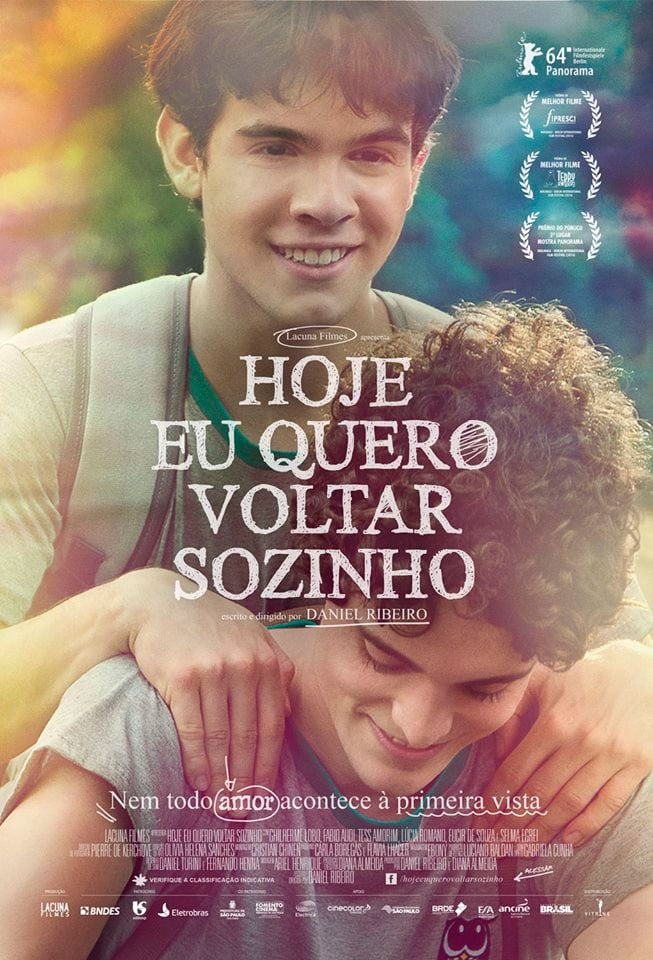
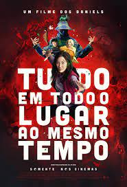

Arthur Henrique Pereira
| Titulo: |
Sinopse: |
Data de Lançamento: |
Indicação etária: |
Poster |
| Hoje eu quero voltar sozinho |
"Hoje Eu Quero Voltar Sozinho" é um filme brasileiro dirigido por Daniel Ribeiro e lançado em 2014. O filme conta a história de Leonardo, um adolescente cego que vive com sua mãe e sua avó em São Paulo. Ele enfrenta as dificuldades cotidianas de uma pessoa com deficiência visual, mas encontra na amizade com sua melhor amiga, Giovana, um refúgio seguro. Tudo muda quando um novo aluno, Gabriel, chega à escola e se torna amigo de Leo. Com o tempo, os dois jovens começam a se aproximar e Leo começa a descobrir sentimentos que nunca havia experimentado antes. O filme é uma história sensível e delicada sobre amor, amizade e autoconhecimento, que aborda temas como sexualidade, aceitação e inclusão de pessoas com deficiência na sociedade. "Hoje Eu Quero Voltar Sozinho" foi um sucesso de crítica e público, ganhando diversos prêmios em festivais nacionais e internacionais.
|
10 de abril de 2014 |
12 anos |
 |
| Tudo em Todo o Lugar ao Mesmo Tempo |
Uma ruptura interdimensional bagunça a realidade e uma inesperada heroína precisa usar seus novos poderes para lutar contra os perigos bizarros do multiverso. |
23 de junho de 2022 |
14 anos |
 |
| Vingadores Ultimato |
Após Thanos eliminar metade das criaturas vivas, os Vingadores têm de lidar com a perda de amigos e entes queridos. Com Tony Stark vagando perdido no espaço sem água e comida, Steve Rogers e Natasha Romanov lideram a resistência contra o titã louco. |
25 de abril de 2019 |
14 anos |
 |